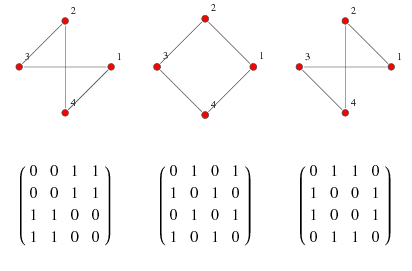

The following two are the most commonly used representations of a graph.
There are other representations also like, Incidence Matrix and Incidence List. The choice of graph representation is situation-specific. It totally depends on the type of operations to be performed and the ease of use.
An adjacency list is a simple way to represent a graph as a list of vertices, where each vertex has a list of its adjacent vertices. Here's an example of an adjacency list for an undirected graph with 4 vertices: makefile
Copy code
0: 1 3
1: 0 2
2: 1 3
3: 0 2
In this example, vertex 0 is adjacent to vertices 1 and 3, vertex 1 is adjacent to vertices 0 and 2, and so on.
Adjacency Matrix is a 2D array of size V x V where V is the number of vertices in a graph. Let the 2D array be adj[][], a slot adj[i][j] = 1 indicates that there is an edge from vertex i to vertex j. The adjacency matrix for an undirected graph is always symmetric.
Adjacency Matrix is also used to represent weighted graphs. If adj[i][j] = w, then there is an edge from vertex i to vertex j with weight w.
